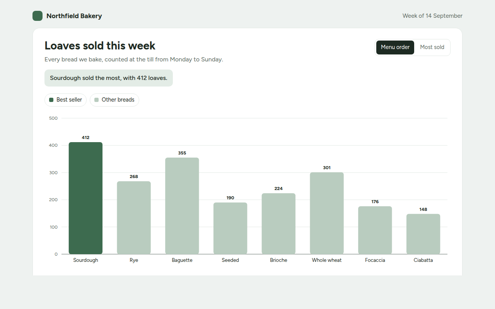
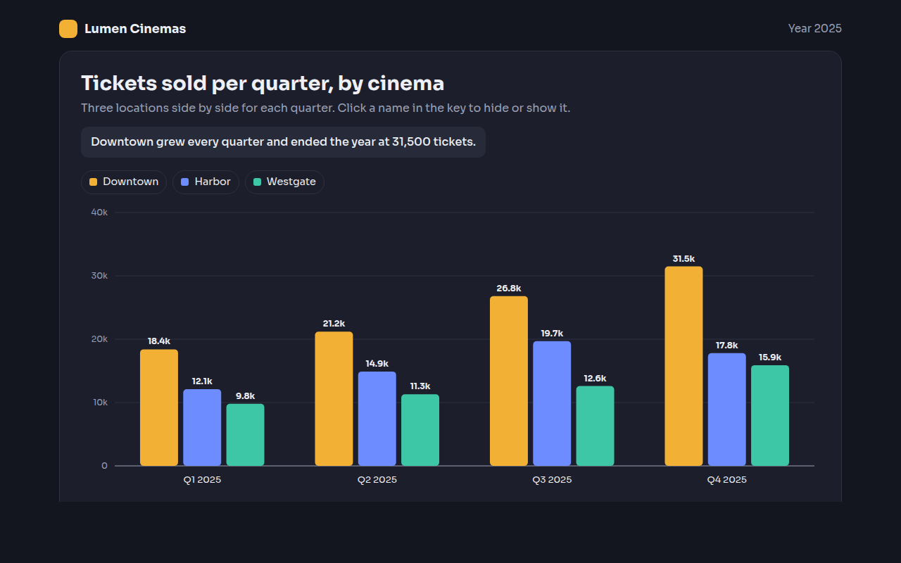
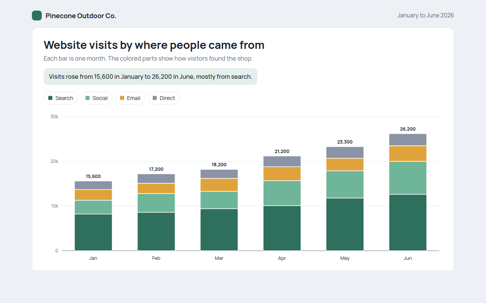
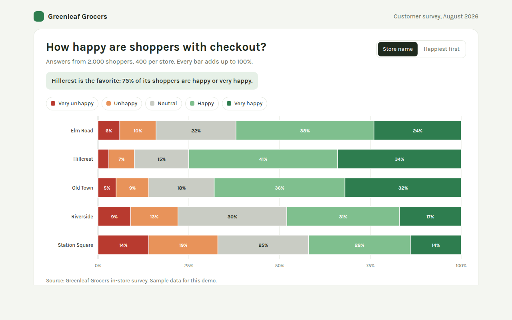
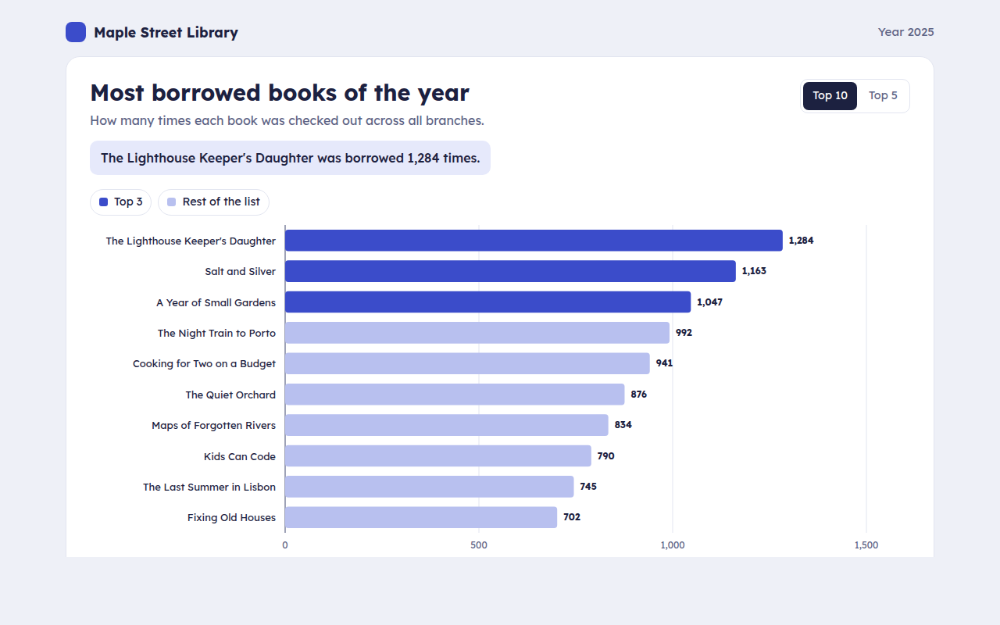
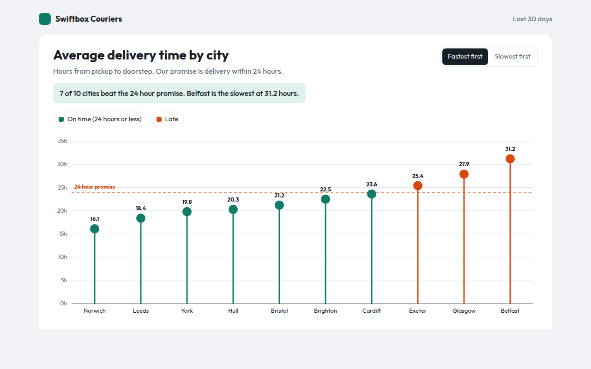
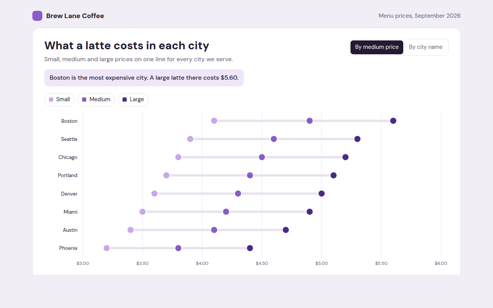
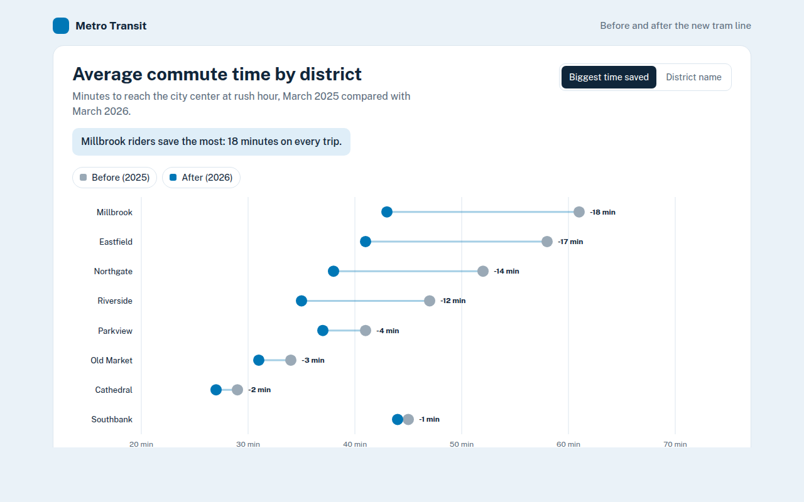
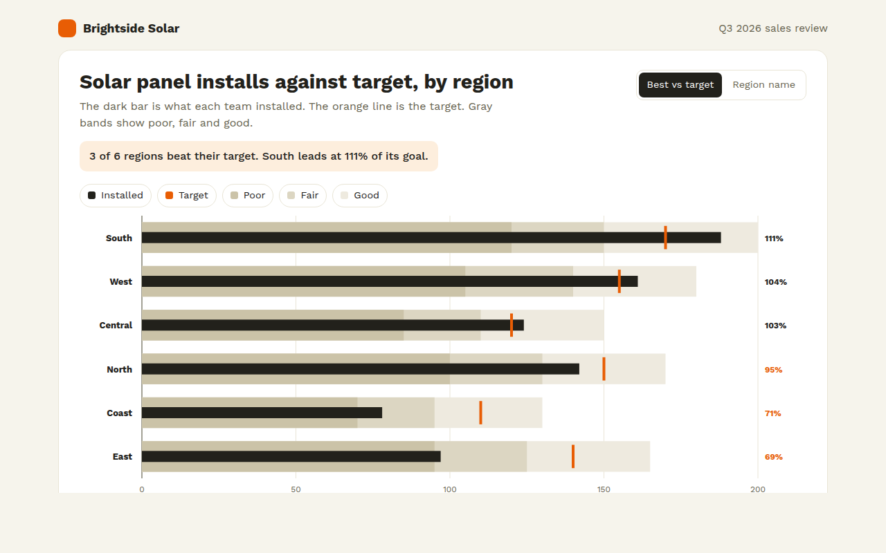
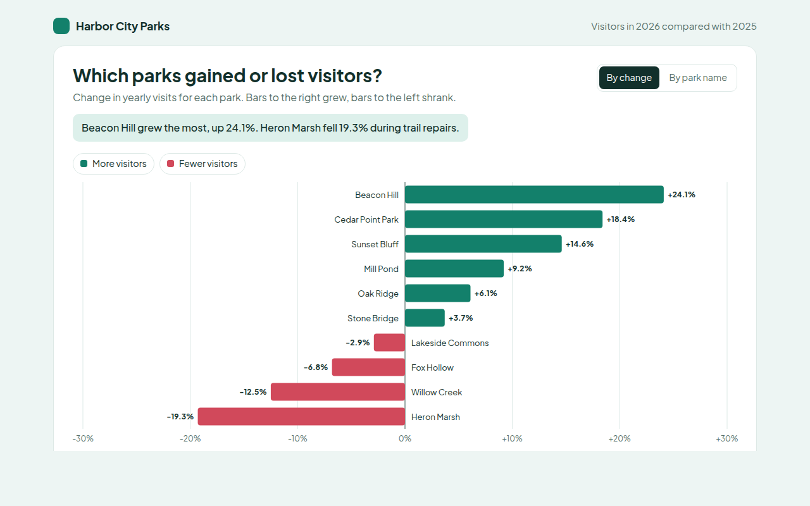

Home / Comparison Charts
Comparison Charts in HTML and JavaScript
Comparison charts answer the most common question people ask about data: which one is bigger? These ten charts cover every way to compare values, from a simple bar chart to before and after dumbbells and target tracking bullet charts. Each one is a single HTML file with no library. Open the demo, change the numbers and put it on your site.

001. Bar Chart
Example: weekly bread sales at a bakery
002. Grouped Bar Chart
Example: cinema ticket sales for three locations per quarter
003. Stacked Bar Chart
Example: website visits by source for an outdoor shop
004. 100% Stacked Bar Chart
Example: customer survey results for five grocery stores
005. Horizontal Bar Chart
Example: the most borrowed library books of the year
006. Lollipop Chart
Example: average delivery time by city with a 24 hour target
007. Dot Plot
Example: small, medium and large latte prices in eight cities
008. Dumbbell Chart
Example: commute times before and after a new tram line
009. Bullet Chart
Example: solar panel installs against target for six regions